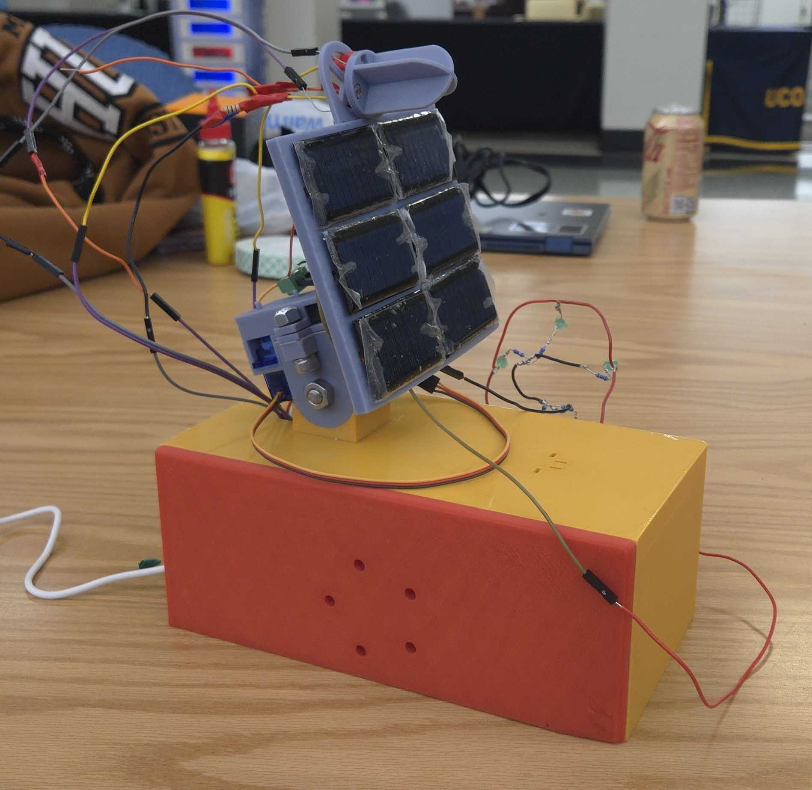
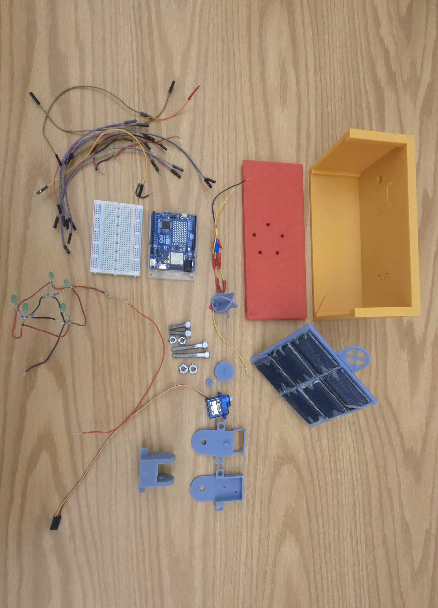
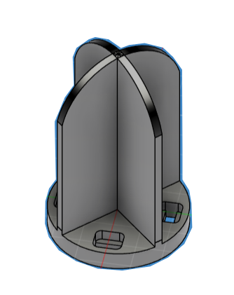
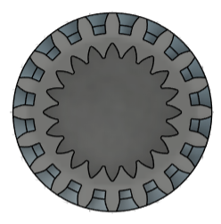
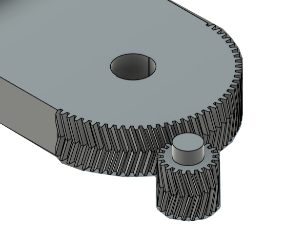
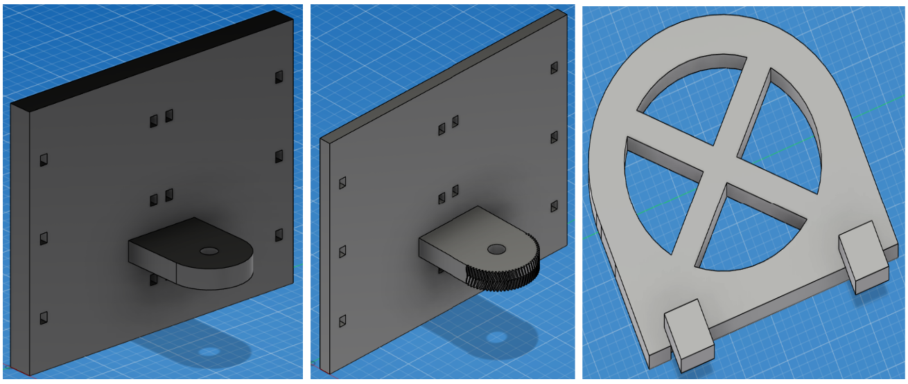
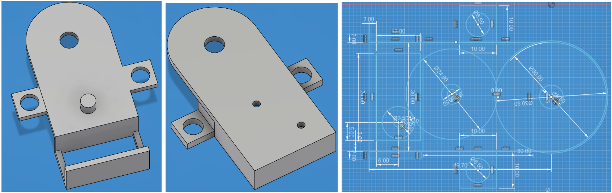
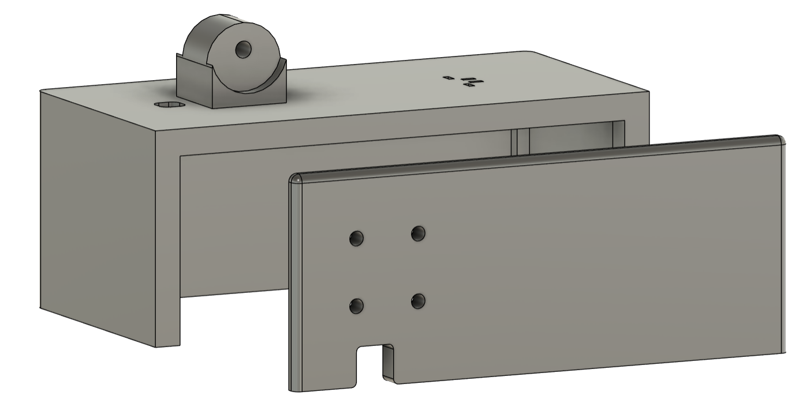
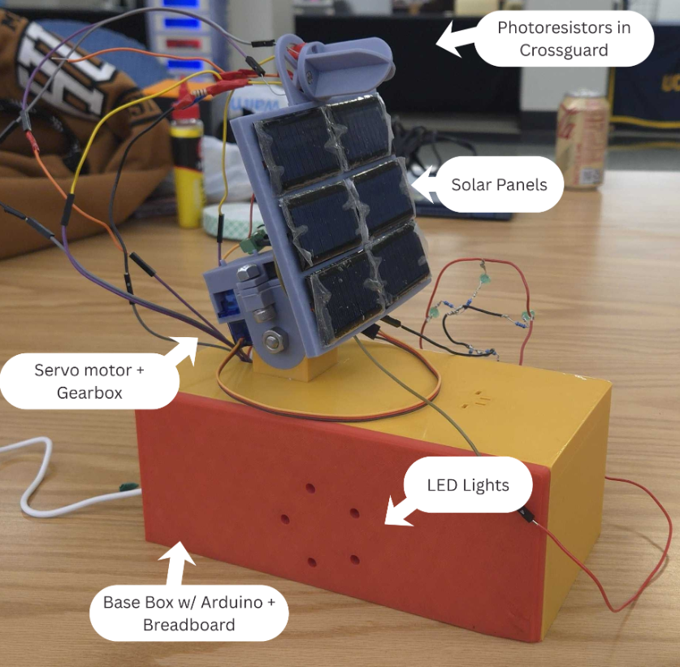

Abstract: The automated solar-tracking system tilts a plate of solar panels towards light for increased power efficiency. The mechatronic system we developed integrates photoresistors, mini solar panels, a Servo motor, an Arduino, 3D printed parts, screws, resistors, wiring, and small LEDs. Readings from the photoresistors direct movement in the Servo motor which is translated to a plate of solar panels through a gear box. The power from the solar panels is connected to a set of LED lights that shine as the panels receive power and dim as they do not. This project presented challenges in project management, coding, gear design, and 3D design. The end product does not completely meet all of our goals for this system, but with more time and materials could be established as a better functioning design.
Introduction & Background: Solar panel devices have been engineered since 1883 when Charles Fritts developed the first solar cell [1]. It took decades of research to make solar panels efficient, and now solar faces the same issues that other renewable energy sources face: variable generation [2]. Solar panels are often stationary which limits the amount of time they face direct sunlight and output maximum power. This is particularly an issue as the sun sets and power demands rise as people return home from work [2]. Adding an automated mechatronic adjustment system to solar panels is one way to make their output more reliable. Our project goal was to make a system that adjusts the angle of the solar panels to always face towards the sun, ensuring that the panels consistently output maximum power. Specifically, this meant taking readings from two photoresistors[3], processing those readings in an Arduino[4], and using that to have a Servo motor[5] tilt a plate of solar panels[6] towards the light. There were some critical goals we wanted to meet:
● Translate variable photoresistor readings into reliable light readings
● Give the SG90 Motor enough torque to tilt the solar panel plate with a 3D printed gearbox

Methodology: This project required use of AutoCAD Fusion, Arduino IDE, Circuit Design, 3D Printing, Gear Design, and Soldering. Getting all the parts working involved a great amount of communication. We used a Google Sheet to keep track of expected values and measurements of the different parts.
Arduino and Control System Design -
The Solar Tracker system uses an Arduino UNO R4 as the ‘brain’, two photoresistors (GM5539) as light sensors, a Servo motor (SG90) that rotates depending on sensor readings, and a gearbox that translate the Servo’s motion to plate adjustment. We reviewed lab assignments, an open source TinkerCad model [7], and a YouTube tutorial [8] as reference for the design.
The main obstacle was the photoresistor’s sensitivity. Initial analog readings in the Arduino ranged from 0-1023. Professor St. John advised us to attach resistors to the sensors to limit our range of values. This greatly reduced our range of analog read values to 0 - ~500, which made for simplified processing in our control system and code.
Photoresistor Housing -
The photoresistor housing needed to securely hold the photoresistors and cast shade upon them when given varied angles of sunlight. One of the designs was a stationary design that would stay level on the base box and another was a crossguard design that would change position with the solar panel plate. Our team chose the crossguard design since its movement with the plate acts as a feedback loop for the code. When sunlight is shining directly above the crossguard (and is thus shining directly on the solar panels), both photoresistors read high values.

Image of the crossguard design in AutoCAD Fusion. The cross guard has a radius of 25mm and is 40mm tall. The photoresistor slots were designed using datasheet measurements[3]. Printed in Elegoo ABS-Like 3.0 Pro resin. Designed by Rowan Weathers
Code Design -
This portion had the greatest challenges in project and time management. The first iterations of code were generated with ChatGPT[9] and did not work. After communication failures the next attempt started fresh and was built modularly, first tackling photoresistor readings and then Servo driving. Overall, the code looks like this:
1. Initialize variables and libraries
2. Adjust Servo to set in the middle of its range, 90°. Set position(pos) to 90.
3. Spend first 20 seconds after system start getting average values(Ereg and Wreg) for the East and West photoresistors:
4. Loop begins, the value used is the difference between the most recent photoresistor readings with the average readings (Ereg and Wreg).
5. If the difference between the values(Eval or Wval) is greater than the tolerance, the Servo motor adjusts to tilt the plate + crossguard towards the light. The motor moves incrementally: angleStep is set to 10°.
6. Position value is updated as the Servo moves to ensure the motor isn’t directed to move outside of the 180° range.
7. Loop repeats to check photoresistor values again.
During final testing this code was very effective in translating photoresistor values into motor movement. When one photoresistor is in the dark and another is light, the motor turns until it either reaches the limit of its rotation range or until both photoresistors are in the light. Movement of the motor is slow and smooth, which aligns well with sun-tracking.
Gear Design -
For this project, gears were used to translate the motion of the Servo motor to the solar panel plate. We chose to do this because the base torque of the Servo motor was not strong enough to tilt the plate weight with six solar panels. The first step was developing an attachment to the Servo motor itself. All gear designs were generated in AutoCAD Fusion with the GF Gear Generator Extension [9]. This extension was shown to our team from a friend of Rowan’s: Brayden Girard who is a fellow OCCC Alumni. With careful measurement, teeth counting, and five test prints of varying sizes we found a fitted slot for the SG90 to be a spur gear with the module set to 0.2775 mm, 20 teeth, and a 30° pressure angle. Once that gear was generated it was used to cut a slot in a larger gear for the Servo to rotate.

The gear slot(dark grey) for the SG90 motor to insert into a larger gear(medium grey). Designed by Rowan Weathers
It was recommended to us by Brayden that we use double helical gears, since the chevron shape of the teeth prevents slipping. All double helical gears in the final project are metric with 0.40mm modules, 8mm in height, 14.5° pressure angle and 15.0° helix angle. They vary in number of teeth, which greatly changes the overall radius of the gear.

The image shows a smaller gear that attaches to the Servo motor and a larger half-gear attached to the solar panel plate. The small gear has 20 teeth and the large half-gear would have a total of 75 teeth if not cut in half. The half-gear and small gear were designed by Rowan Weathers
There were two core challenges in designing these gears: Printing the gears accurately with fine details and using gear ratios to get the right balance of torque and motion range. To print them accurately we printed them in resin over filament. Rowan designed the gears in Fusion and sent them to Gary, where he would print and test the gears with the gear box and solar plate. Notes on the test were sent to Rowan and designs were adjusted accordingly. Modifications were made to adjust both fit and gear ratio. The Servo gear needed to be smaller than the plate gear in order to have enough torque to tilt the plate, but in gaining torque the range of motion was limited. This was a challenge to balance and is further expanded on in the Gear Box and Plate design section
Gear Box and Plate Design -
Our goal was to have a self-contained setup with limited parts that provides the proper torque and range to meet the needs of the system. The parts were all printed with Elegoo ABS-like 3.0 Pro Photopolymer Resin on an Elegoo Saturn 4 Ultra. This resin provides the right amount of flexibility and also the greatest work tension for drilling and cutting for the pricing compared to other durable resins.
The Solar Plate was designed with a width and height of 120x100mm with a 10mm thickness. We added 3x4mm slots spaced out to be able to allow the solar panel wires to be fed through the plate and to keep them organized behind the plate. Additionally, the plate was given an extension with a 6.5mm hole through it off the back where it would be held in place with an M6x5mm hex socket screw. Rowan designed the gear thread embossment for the extension that meshed with the other gears. We decreased the thickness of the solar plate down to 5mm to decrease weight on the system and mitigate friction between the gears and the plates.

The left image shows the solar plate with a 10mm thickness before the gear threads had been added. The middle image is the final iteration of the solar plate with a 5mm thickness. The third image is of the add-on for the cross guard to glue onto. This part is also glued to the solar panel on top with cyanoacrylate. Designed by Gary Friend.
The gearbox design was designed around the solar plate’s extension arm. The original design for the bottom plate of the gearbox set the Servo to rest in a basket-style slot that utilises the tabs on the sides of the Servo. A slight 1mm spacing allows the Servo to have some give without being so loose the gears do not mesh properly. The middle gear holder was designed with a similar mindset. We added a small 5.5mm tab that the gear rests on, which was sanded down with 600 grit sandpaper to create a soft glide between the gear recess and the tab. After a conversation with UCO Senior Josh Henstock, he advised Gary on gear design and how proper spacing between the gears can increase grip with one another without causing binding. The gears mesh at no more than 0.5mm into one another. Finally the top plate sits exactly over the top of the bottom plate. Two 2.5mm holes were added directly over the gear centers so they can be easily aligned with cylinder tabs attached to the gears. Two M6x3mm hex socket screws secure the plates together and to a mounting bracket and are locked into place with 2 M6 Stover nuts.

The left image shows the top plate of the gearbox. The middle image shows the bottom plate of the gear box. The right image is the base design print used for the bottom plate and the plans for the top plate. The left side of the image shows the dimensions of the Servo motor. Designed by Gary Friend
This process involved many iterations to find the best setup for our system demands. The first change was adjusting the gear ratio to 2:1, but what we found with that setup was that we lost torque on the gears and this new setup required completely changed gear box plates and additional hardware. Next we changed the ratio to 3:1 using the new plates designed for the previous attempt and found that we increased the torque, but at the cost of friction between the plates and the extension of the solar plate. Remedies were attempted with washers and then eventually Silicone gear lube, but neither achieved the results we had hoped for. For our final change attempt the extension arm had a 4mm hole drilled behind the original 6mm hole and an M4 was threaded through it. A new plate set was designed for it to try and see if a swivel mechanic would work. Unfortunately having a stable holding point for the extension arm wasn’t considered until testing found that the arm could swing beyond the range of the driving gear and come loose. This iteration was abandoned and we returned to the original design. After reassembling the original design we realised by lessening the weight of the solar plate it provided just the right amount of hold and didn’t struggle with friction and tension like in previous testing.
Circuit Design & Soldering -
The solar panels were connected to a set of LED lights to display the varying power output with light. Six solar panels themselves are soldered in series and attached to the plate with two-sided tape. The 100kΩ resistor is connected in series to the panels to drop the voltage. Green LEDs have a forward voltage of 2V and a current rating of 20mA. Using five green LEDs paired with 100Ω current-limiting resistors allows the LEDs to emit dim light when the solar panels are not facing direct light and emit bright light when the solar panels are facing direct light. Each of the solar panels are rated for 5V under direct sunlight, but for the demonstration we were restricted to presenting indoors, so we had an output of ~19V in total from the six panels.
Soldering for the control system and solar panel circuit was done by Rowan in OCCC’s Engineering Lab. This was due to the easy access of tools there and Rowan’s prior experience with soldering.
Base Box Design -

Final base box design. The mounting bracket on top attaches to the gear box. The box itself encloses the Arduino and breadboard. Printed with SUNLU PLA+ Filament. Designed by Gary Friend and Rowan Weathers
The base box serves as the housing for our system. With this box the plate can turn independently without tipping over. We faced challenges in getting the design printed properly at both the Makerspace and the Innovation Studio, and eventually used 3D printers available at OCCC since Rowan has employee access and they functioned better. The base box gives our project a cleaner look by housing the Arduino, breadboard, LEDs, and majority of the wiring. A slot was added at the bottom of the faceplate to allow the LED wires and Arduino to feed through the bottom for a more efficient design.
Results & Discussion:
The Solar Tracker successfully acts as an automated mechatronic system that adjusts a plate of solar panels to face the greatest amount of light. We tested the project multiple times with indoor lighting and a phone flashlight where the system moves smoothly and reliably follows a light source.

Photo of the final Solar Tracker project assembled with labeled parts. The faceplate of the base box was updated for cable management, but the rest of the design is final.
To use the system, the Arduino programmed with our code is given power, and then the system spends the first 20 seconds on getting an average lighting reading. After that any new light introduced around the crossguard will prompt movement of the plate within its movement range (~160°), until the crossguard and solar plate are facing direct light and the plate stops. The system came together much better than we expected. The gearbox particularly stands out as a success in translating the rotation of the Servo motor to rotation of the solar panel plate.
Conclusions and Recommendations:
This project presented major challenges in communication, coding, and mechanical design. Our biggest successes in this project are the gearbox that translates Servo motion into plate motion and the code which successfully processes sensor readings. The system consistently adjusts the solar plate to face the greatest amount of light during indoor testing. While the Solar Tracker does function, many improvements could be made to our design:
- Outdoor testing is necessary to determine the viability of this design for sunlight tracking. Due to time constraints and our demonstration location we never tested our design outdoors.
- Currently the project is composed almost entirely of 3D printed parts, which lacks the material strength that most outdoor solar products require.
- Switching to a stepper motor (perhaps a NEMA 17) would provide our plate with a greater range of motion and a greater torque strength than the current Servo motor does.
- Analysis should be done on the power consumption of the system versus the power output of the panels.
Citations
- [1] Elizabeth Chu and D. Lawrence Tarazano. “A Brief History of Solar Panels.” smithsonianmag.com.https://www.smithsonianmag.com/sponsored/brief-history-solar-panels-180972006/ (accessed November 2025).
- [2] Gretchen Bakke, The Grid: The Fraying Wires Between Americans and Our Energy Future. New York City, New York, USA: Bloomsbury USA, 2016.
- [3] EBOOT. “EBOOT 30 Pieces Photoresistor Photo Light Sensitive Resistor Light Dependent Resistor 5 mm (5539).” amazon.com .https://www.amazon.com/eBoot-Photoresistor-Sensitive-Resist or-Dependent /dp/B01N7V536K/ref=sr_1_3?crid=1G6MNKVYTWLMX&dib=eyJ2IjoiM SJ9.G1wPypxNK3kbL7U6ifSbg-fewIggJvvdrxBrzNraZ1f1qOz7A1vJ31NkRijL2-GGOXNaqD6Q-VhIZzcU_56JpVkOOLVrBhJVwg4fhY5uI-qe8S7tgiO78h8d5-t_H2S9DPJeQmEhvLnm50wCeCa7VXaUFq SHvajPAdk4Er1-Ys-XVHTTCr0IhS_kgcgswfbSTDtWo-SlZMSNDR237QPt-ZaWjtzhz5K4CZ1zhx-c4Jo.-SxUY udPgksywJSLrjJC3nIWUACXY1iJEls5is0fURE&dib_tag=se&keywords=photoresistor&qid=1758044033&spref ix=photoresi%2Caps%2C130&sr=8-3&th=1 (accessed September, 2025).
- [4] Arduino. “Arduino UNO R4.” store.arduino.cc. https://store.arduino.cc/pages/uno-r4 (accessed October 2025).
- [5] Pcheung. “SERVO MOTOR SG90 DATASHEET.” Website.http://www.ee.ic.ac.uk/pcheung/teac hing/DE1_EE/stores/sg90_datasheet.pdf (accessed October, 2025).
- [6] AOSHIKE. “10Pcs 5V 30mA Mini Solar Panels for Mini Solar Cells DIY Electric Toy Materials Photovoltaic Cells Solar DIY System Kits 2.08"x1.18"(5V 30mA 53mmx30mm).” Website. https://www.amazon.com/AOSHIKE-Electric-Materials-photovoltaic-53x30MM/dp/B07BMMH MSJ/ref=sr_1_3?dib=eyJ2IjoiMSJ9.41Tx-jhaXqdc9iYQRt2pYP0nZ5JiVyYT5qU72cYJc9ojQyMMiTnw29-FP-9 oKwLuReJNluRutWBq07dMDm-L9ICzFjE38ogZvGwSEBgYygmoaUtTE2S1eq2uzbDFibRM3fHi1L0IeI12fBL NuJPvCFDXzvKR1j4C-lOIJJQJF6aST4PSgvhHxJh8WBleZ3Yw9KksBXs1GW1UGjOv9nhUtJvMSJEQAG3lkn 2qkRcoy10.H9-xnbwvtvpKQg72gXcVGcimBJPnzC0CleiQErTh8RE&dib_tag=se&keywords=mini+solar+panels &qid=1758044006&sr=8-3 (accessed September, 2025).
- [7] Kartik G (open source TinkerCad). “Photoresistor +Servo Motor” https://www.tinkercad.com/things/9D043UUCtiR-photoresistorservo-motor (accessed November 2025)
- [8] Science Buddies. “How to Use a Photoresistor (Light Sensor) with Arduino (Lesson #27).”https://www.youtube.com/watch?v=XwJQJnY6iUs&feature=youtu.be&themeRefresh=1 (accessed November,2025)
- [9] ChatGPT 4, private communication, October 2025.
- [10] Gras Solutions. “GF Gear Generator | Fusion | Autodesk App Store.” Website.https://apps.autodesk.com/FUSION/en/Detail/Index?id=1236778940008086660 (accessed November, 2025).